Dependence in Meta-Analysis
Typical methods to conduct meta-analysis or meta-regression work under the assumption that the effect size estimates are independent. However, primary studies often report multiple, statistically dependent estimates of effect sizes. Dependent effect sizes can occur through correlated effects structure, a hierarchical effects structure, or a combination of the two (Hedges, Tipton, & Johnson, 2010; Pustejovsky & Tipton, 2021). A correlated effects data structure typically occurs due to multiple correlated measures of an outcome, repeated measures of the outcome data, or comparison of multiple treatment groups to the same control group (Hedges et al., 2010). A hierarchical effects structure typically occurs when the meta-analysis includes multiple primary studies conducted by the same researcher, by the same lab, or in the same region (Hedges et al., 2010).
Researchers may be inclined to ignore dependence and use methods that assume that each effect size estimate is independent. However, doing so can result in inaccurate standard errors and, consequently, hypothesis tests with incorrect Type I error rates and confidence intervals with incorrect coverage levels (Becker, 2000). Ad-hoc methods for handling dependence include averaging effect sizes by study or selecting a single effect size per study. These methods result in loss of information and are not suitable for studying within-study variation in effect sizes (Hedges et al., 2010). A method called shifting the unit-of-analysis involves running meta-analytic models for different subsets of the data (Cooper, 1998). However, this strategy is not useful if a researcher wants to summarize effects across the subsets or study differential effects (Becker, 2000).
The ideal solution for handling dependence would be to use a multivariate model (Becker, 2000; Hedges et al., 2010). This approach explicitly models dependence among the effect sizes (Becker, 2000; Hedges et al., 2010). However, multivariate meta-analysis requires knowledge of correlations or covariances between pairs of effect size estimates within each study, which are often difficult to obtain from primary studies.
To handle dependence without knowing the covariance structure between effect size estimates, Hedges et al. (2010) proposed the use of robust variance estimation (RVE). RVE involves estimating the variances for the meta-regression model’s coefficients using sandwich estimators that are valid even when the covariance structure is unknown or mis-specified (Hedges et al., 2010). However, the performance characteristics of RVE are asymptotic in that a large number of clusters or studies is required to provide accurate standard error estimates (Hedges et al., 2010). If the number of studies in a meta-analysis is small, RVE, as originally proposed by Hedges et al. (2010), can result in downwardly biased standard errors and inflation of Type I error rates (Hedges et al., 2010; Tipton, 2015).
Tipton (2015) and Tipton & Pustejovsky (2015) examined several small sample correction methods to improve the performance of RVE. Tipton (2015) recommended CR2 type correction for RVE as well as the use of Satterthwaite degrees of freedom for single coefficient tests. Tipton & Pustejovsky (2015) examined corrections for multiple-contrast hypothesis tests. Tipton & Pustejovsky (2015) found that the HTZ test, which is an extension of the CR2 correction method with the Satterthwaite degrees of freedom, controlled Type 1 error rate adequately even when the number of studies was small. However, Joshi, Pustejovsky, & Beretvas (2022) showed, through simulations, that the HTZ test can be conservative. The authors examined another method, cluster wild bootstrapping (CWB), that has been studied in the econometrics literature but not in the meta-analytic context. The results of the simulations from Joshi et al. (2022) showed that CWB adequately controlled for Type 1 error rate and provided higher power than the HTZ test, especially for multiple-contrast hypothesis tests.
Bootstrapping
General bootstrapping can be used to estimate measures of uncertainty, like standard errors, p-values and confidence intervals, even when other methods fail (Boos et al., 2003). Bootstrapping involves re-sampling from the original data many times to create an empirical distribution which is used in place of the distribution of an estimate or test statistic (Boos et al., 2003).
Several bootstrapping data generating processes are available. The most common one is pair bootstrapping, which involves re-sampling with replacement the set of outcome and covariate data for each case (Freedman, 1981, 1984). For data involving clusters, the entire cluster is re-sampled (Cameron, Gelbach, & Miller, 2008). In meta-analytic studies with small number of clusters, pairs bootstrapping can result in lack of variance in the distribution of covariates rendering estimation of coefficients infeasible (Cameron et al., 2008).
Another type of bootstrapping involves re-sampling residuals (Cameron et al., 2008). In case with clusters, entire vector of residuals for each cluster is re-sampled (Cameron et al., 2008; MacKinnon, 2009). Such a procedure requires clusters to be of equal size and has an underlying assumption that the errors are independently and identically distributed (MacKinnon, 2009).
An ideal way to bootstrap when the number of clusters is small is to use cluster wild bootstrapping, which involves sampling weights and multiplying residuals with the random weights (Cameron et al., 2008; MacKinnon, 2009). In contrast to the process of pair bootstrapping, the process of CWB does not involve re-sampling the distribution of predictor variables. Thus, the problem of lack of variance in covariates due to re-sampling does not occur with CWB (Cameron et al., 2008; MacKinnon, 2009). Further, in contrast to residual bootstrapping, CWB does not require clusters to have the same size and does not require the errors to be independently and identically distributed (Cameron et al., 2008; MacKinnon, 2009).
Cluster Wild Bootstrapping
This section provides an overview of the cluster wild bootstrapping algorithm.
MacKinnon (2009) recommended imposing the null hypothesis when running bootstrap hypothesis tests as the process of hypothesis testing involves examining where the test statistic lies on the the sampling distribution based on the null hypothesis. For weights to use in cluster wild bootstrapping, MacKinnon (2015) and Webb (2013) have shown that the Rademacher weights, which take on the values of -1 and 1 with the probability of 0.5 each, outperform all other types of weights for studies with number of clusters as low as 10.
The general process of conducting cluster wild bootstrapping is as follows (Cameron et al., 2008; MacKinnon, 2009):
Fit a null model and a full model on the original data.
Obtain residuals from the null model.
Generate an auxiliary random variable that has mean of 0 and variance of 1 and multiply the residuals by the random variable (e.g., Rademacher weights) set to be constant within clusters (CWB). The residuals can also be multiplied by CR2 adjustment matrices before multiplying by weights (CWB Adjusted). Adjusting the residuals by CR2 matrices can correct the under-estimation of the error variance when the working model is incorrect (Davidson & Flachaire, 2008; MacKinnon, 2006; Pustejovsky & Tipton, 2018).
Obtain new outcome scores by adding the transformed residuals to the predicted values from the null model fit on the original data.
Re-estimate the full model with the new calculated outcome scores and obtain the test statistic.
Repeat steps 3-5 \(R\) times. Calculate p-value:
\[p = \frac{1}{R} \sum_{r = 1}^R I\left(F^{(r)} > F\right)\]
The results of the simulation studies conducted in Joshi et al. (2022) did not show any difference in Type 1 error rates or power when multiplying the results by CR2 adjustments matrices. However, the authors did not study major mis-specifications of the working model in the simulation studies.
Example from wildmeta
This section presents examples of how to implement cluster wild
bootstrapping using functions from our wildmeta package.
The functions in our package work with models fit using
robumeta::robu() (Fisher, Tipton,
& Zhipeng, 2017) and metafor::rma.mv() (Viechtbauer, 2010).
robumeta models
The examples in this vignette utilize the SATCoaching
dataset from the clubSandwich package (Pustejovsky, 2020), originally from DerSimonian & Laird (1983). The standardized
mean differences represent the effects of SAT coaching on SAT verbal
(SATV) and/or SAT math (SATM) scores.
The code below runs cluster wild bootstrapping to test the
multiple-contrast hypothesis that the effect of coaching does not differ
based on study type. The study_type variable indicates
whether groups compared in primary studies were matched, randomized, or
non-equivalent. The meta-regression model also controls for hours of
coaching provided (hrs) and whether the students took math
or verbal test (test). Below, we run a zero-intercept
meta-regression model.
The Wald_test_cwb() function takes in a full model fit
using the robumeta::robu() function. Further, users need to
specify the constraint to be tested. Below, we create a constraint
matrix using clubSandwich::constrain_equal(); indices 1 to
3 correspond to the three levels of the study_type
variable. Users can specify the number of bootstrap replications R. In
the examples below, we set the value to 99 to speed up computation time.
In practice, we recommend using a higher number of bootstrap
replications, such as 1999. Using more replications will improve power.
Please see Davidson & MacKinnon (2000)
for guidance on the number of bootstrap replications to use. Users can
also set the seed in the Wald_test_cwb() function.
library(wildmeta)
library(clubSandwich)
library(robumeta)
robu_model <- robu(d ~ 0 + study_type + hrs + test,
studynum = study,
var.eff.size = V,
small = FALSE,
data = SATcoaching)
Wald_test_cwb(full_model = robu_model,
constraints = constrain_equal(1:3),
R = 99,
seed = 20201228)
#> Test Adjustment CR_type Statistic R p_val
#> 1 CWB CR0 CR0 Naive-F 99 0.3131313The output of the function contains the name of the test, the adjustment used for the bootstrap process, the type of variance-covariance matrix used, the type of test statistic, the number of bootstrap replicates, and the bootstrapped p-value.
The users can also specify whether to adjust the residuals with
CR1 to CR4matrices when bootstrapping as
below. The default value for the adjust argument is set to
CR0. Below is an example where we set the adjust the
residuals using CR2 matrices.
Wald_test_cwb(full_model = robu_model,
constraints = constrain_equal(1:3),
R = 99,
adjust = "CR2",
seed = 20201229)
#> Test Adjustment CR_type Statistic R p_val
#> 1 CWB Adjusted CR2 CR0 Naive-F 99 0.4242424
metafor models
In the examples above, we used the robumeta::robu()
function to fit the full model. In this section, we fit the full model
using the metafor::rma.mv() function. (We use a small,
entirely insufficient number of replications in order to limit the
computing time of this vignette.)
library(metafor)
rma_model <- rma.mv(yi = d ~ 0 + study_type + hrs + test,
V = V,
random = ~ study_type | study,
data = SATcoaching,
subset = !is.na(hrs) & !is.na(test))
Wald_test_cwb(full_model = rma_model,
constraints = constrain_equal(1:3),
R = 19,
seed = 20210314)
#> Test Adjustment CR_type Statistic R p_val
#> 1 CWB CR0 CR0 Naive-F 19 0.2105263Timing
robumeta models
The Wald_test_cwb() function runs within a minute for
correlated effects models even when using a large number of bootstrap
replications. Below is an example with 1999 bootstrap replications.
system.time(
res <- Wald_test_cwb(full_model = robu_model,
constraints = constrain_equal(1:3),
R = 1999,
seed = 20201229)
)
#> user system elapsed
#> 20.870 0.448 22.499Computation speed can sometimes be improved by setting a parallel
processing plan using the future package:
library(future)
if (parallelly::supportsMulticore()) {
plan(multicore)
} else {
plan(multisession)
}
nbrOfWorkers()
#> system
#> 4
system.time(
res <- Wald_test_cwb(full_model = robu_model,
constraints = constrain_equal(1:3),
R = 1999,
seed = 20201229)
)
#> user system elapsed
#> 1.674 0.104 23.486
plan(sequential)
metafor models
CWB takes longer with models fit using
metafor::rma.mv(). Below is an example with 99 bootstrap
replications:
reps
#> [1] 99
system.time(
res_seq <- Wald_test_cwb(full_model = rma_model,
constraints = constrain_equal(1:3),
R = reps,
seed = 20210314)
)
#> user system elapsed
#> 22.501 2.872 25.810
res_seq
#> Test Adjustment CR_type Statistic R p_val
#> 1 CWB CR0 CR0 Naive-F 99 0.2525253Again, computation speed can sometimes be improved by setting a
parallel processing plan using the future package:
library(future)
if (parallelly::supportsMulticore()) {
plan(multicore)
} else {
plan(multisession)
}
nbrOfWorkers()
#> system
#> 4
system.time(
res_para <- Wald_test_cwb(full_model = rma_model,
constraints = constrain_equal(1:3),
R = reps,
seed = 20210314)
)
#> user system elapsed
#> 1.753 0.106 19.790
plan(sequential)
res_para
#> Test Adjustment CR_type Statistic R p_val
#> 1 CWB CR0 CR0 Naive-F 99 0.2525253Bootstrap Distribution Plot
The function plot()
creates a ggplot figure representing the distribution of
the bootstrap replicates based on the results from the
Wald_test_cwb() function. The dashed line represents the
\(F\) test statistic from the original
full model. The bootstrapped p-value is the proportion of bootstrapped
\(F\) test statistics that are greater
than the original \(F\) statistic.
plot(res, fill = "darkred", alpha = 0.5)